✦ Подборка · 23 модели
Искусственные ёлки для частного дома
В частном доме потолки обычно выше, чем в квартире, а гостиная просторнее — значит, и ёлка может быть больше и пышнее. Мы собрали модели от 2,1 до 3,8 м, которые хорошо смотрятся в гостиной, у лестницы или в зале со вторым светом.
На карточках указан диапазон высот и цена за 210 см. Все ёлки литые, российского производства.
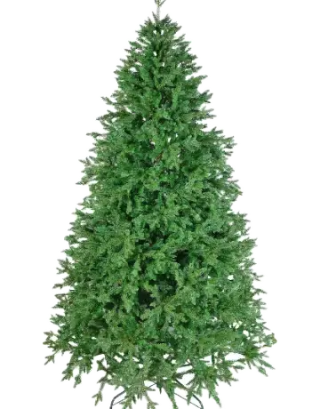
Крымская220–380 см · от 27 300 ₽ Тюменская210–300 см · от 17 400 ₽
Тюменская210–300 см · от 17 400 ₽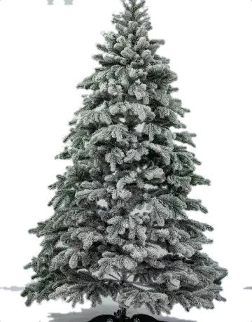
Заснеженная литая210–300 см · от 20 700 ₽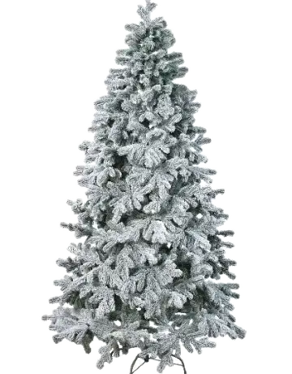
Лесная заснеженная210–300 см · от 20 700 ₽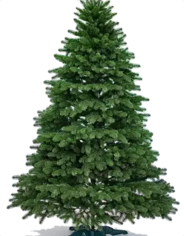
Свердловская210–300 см · от 25 300 ₽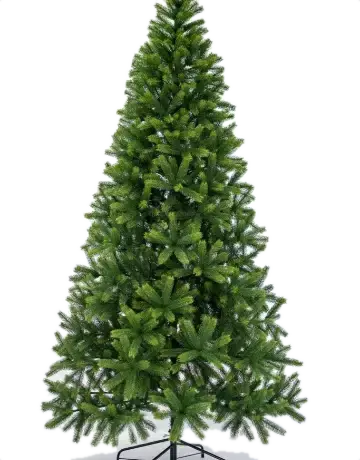
Иркутская210–250 см · от 12 400 ₽ Кремлёвская210–250 см · от 13 200 ₽
Кремлёвская210–250 см · от 13 200 ₽ Альпийская Люкс210–250 см · от 13 700 ₽
Альпийская Люкс210–250 см · от 13 700 ₽ Пермская210–250 см · от 14 900 ₽
Пермская210–250 см · от 14 900 ₽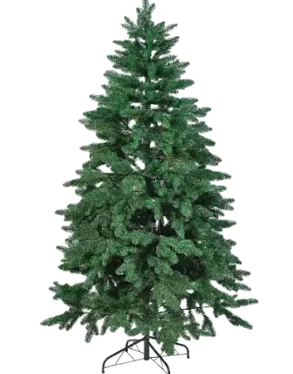
Лесная210–250 см · от 14 900 ₽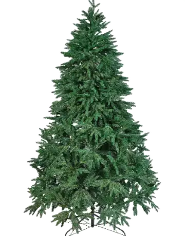
Саратовская210–250 см · от 17 400 ₽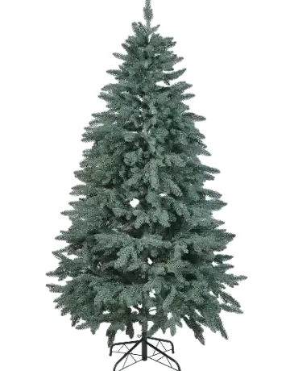
Тюменская голубая210–250 см · от 17 400 ₽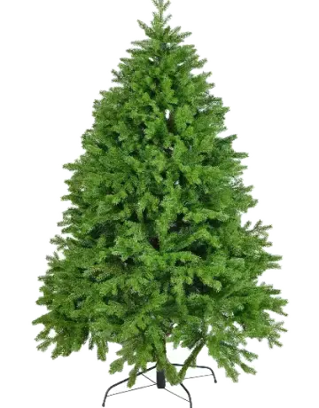
Тобольская210–250 см · от 19 700 ₽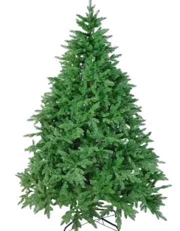
Звёздная210–250 см · от 21 300 ₽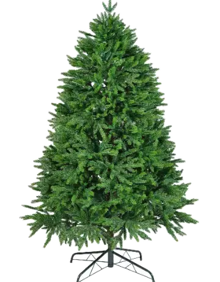
Саратовская Люкс210–250 см · от 21 800 ₽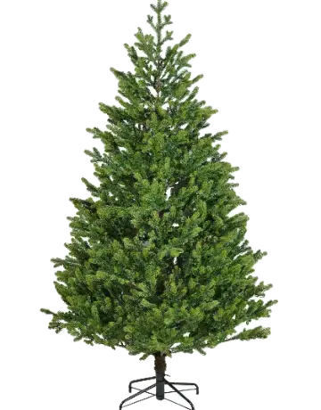
Московская210–240 см · от 25 800 ₽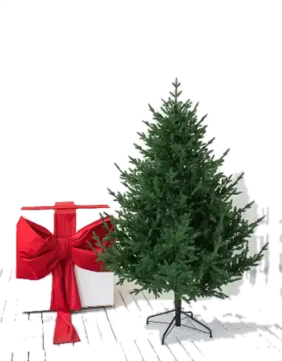
Омская Люкс210–230 см · от 11 390 ₽ Кунгурская210–230 см · от 14 600 ₽
Кунгурская210–230 см · от 14 600 ₽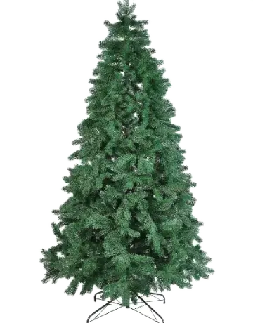
Сосна210–230 см · от 14 900 ₽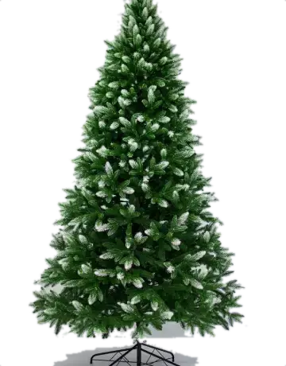
Пермская белоснежная210–230 см · от 14 900 ₽Пермская белая210–230 см · от 14 900 ₽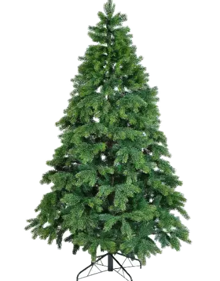
Сосна литая Микс210–230 см · от 16 500 ₽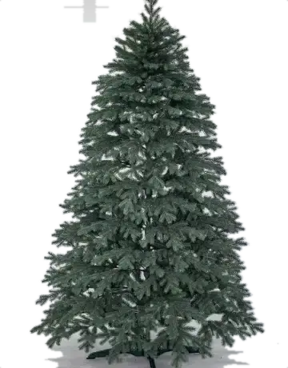
Тобольская голубая210–230 см · от 19 700 ₽Как выбрать ёлку для дома
Какую высоту взять
Измерьте потолок в том месте, где будет стоять ёлка, и отнимите 30–50 см на верхушку и запас. В мансарде со скошенным потолком мерьте по самой низкой точке над будущей макушкой. Подробнее — в статье «Какую высоту ёлки выбрать».
Для потолков 2,4–2,7 м подойдут ёлки 210 см и 230 см, для 2,8–3 м — ёлки 250 см, для второго света — ёлки 3 метра и выше.
Пышная или стройная
В большой гостиной эффектнее пышные ели с широким нижним ярусом: Тюменская, Свердловская, Звёздная. У лестницы или в углу лучше встанут более узкие: Кремлёвская, Иркутская, Пермская. Самая высокая модель — Крымская, до 3,8 м.
Заснеженная, голубая или зелёная
Классическая зелёная ель подходит к любому интерьеру. Для дома в светлых тонах или в скандинавском стиле присмотритесь к заснеженным ёлкам и голубым елям.
Почему не живая ель
Большая живая ель на 3 метра каждый год стоит дорого, осыпается и требует воды. Литая ёлка служит много сезонов и выглядит как настоящая. Сравнение — в статье «Живая или искусственная ёлка».
Вопросы
Какая ёлка самая высокая?
Крымская — до 3,8 м.
Привезёте ёлку за город?
По Омску доставка бесплатная. Условия доставки за город уточните по телефону 8 904 079-18-29.
Как хранить большую ёлку?
Ёлка разбирается на части и убирается в коробку. Подробнее — в статье «Как собрать и хранить искусственную ёлку».
Можно поставить ёлку на веранде?
В закрытой отапливаемой веранде — да. На улице под снегом и солнцем хвоя быстрее теряет цвет.
Другие подборки
Сомневаетесь с моделью или высотой?
Пройдите подбор из 4 вопросов — покажем подходящие ёлки с ценами.